We are a non-profit organization, which means that all donations
and funds we receive are dedicated to supporting marine animals.
Our work is made possible by the generosity and commitment of
our donors who believe in our mission and want to help protect
the oceans and their inhabitants.
Join our movement, help us protect and support marine animals,
for the sake of our planet and future generations
Supporting and protecting marine animals plays a crucial role
in maintaining the balance of oceanic ecosystems, which are incredibly
important for life on Earth. Through our non-profit activities,
led by ocean enthusiasts and their inhabitants, we can effectively
counteract the threats facing these amazing creatures.
Why It Matters?
Biodiversity: The oceans are home to an immense diversity of life,
from microscopic organisms to whales. Preserving
this diversity is key to maintaining ecosystem stability.
Climate Regulation: Oceanic ecosystems play a significant
role in climate regulation by absorbing carbon dioxide and
producing oxygen. Protecting these ecosystems is therefore
essential for the health of the entire planet.
Threats: Marine animals are exposed to numerous threats,
such as industrial fishing, plastic pollution,
climate change, and habitat loss. Our work focuses on reducing
these threats and rescuing these magnificent creatures.
How You can help
Donating: Your financial support allows us to continue our
vital work of protecting and supporting marine life.
Volunteering: Join us as a volunteer and contribute your time
and skills to our conservation projects and initiatives.
Spreading Awareness: Share our message with your friends,
family, and community. Together, we can amplify our impact
and create positive change for marine animals.